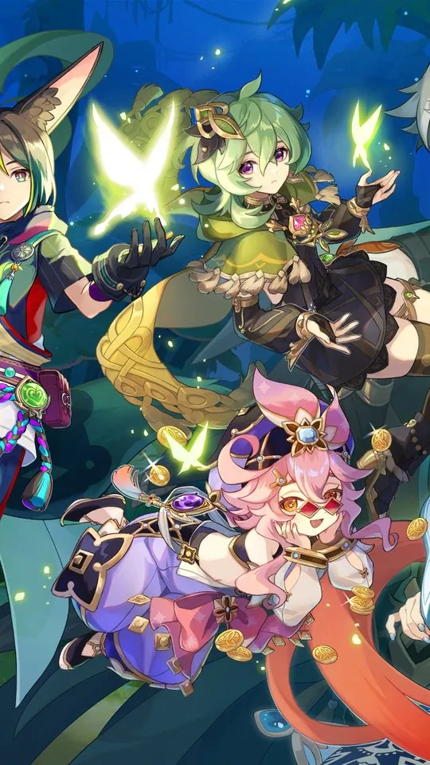
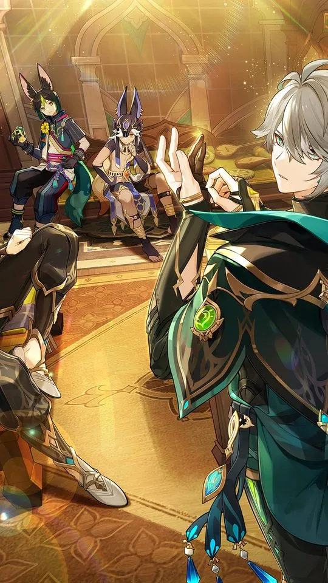
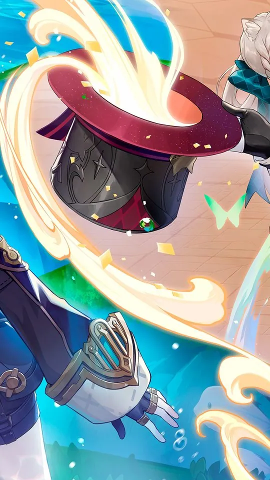
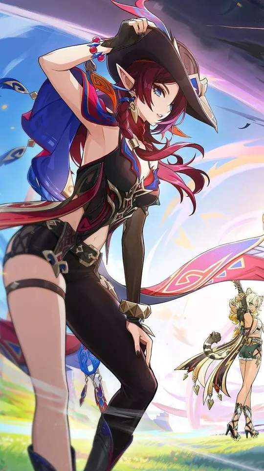

Genshin Impact Wallpapers: Best Characters for Your Home Screen

Genshin Impact has one of the most consistent art styles in gaming, and its elemental system gives every character a built-in colour theme you can build a home screen around. This guide works through Raiden Shogun, Nahida, Furina, Zhongli and Hu Tao, explaining the palette each one carries and how those colours behave behind icons and widgets. It also covers the practical difference between official splash art and fan art, so you know which to reach for when you want a wallpaper that actually fits a phone.
Why elemental colour matters for a wallpaper
Every character in Genshin belongs to one of seven elements, and each element has an established visual identity: Electro runs purple and violet, Dendro runs green, Hydro runs blue, Pyro runs red and orange, Geo runs amber and gold, Anemo runs teal and mint, and Cryo runs pale blue and white. Because the game's designers keep those colours consistent across a character's hair, clothing, abilities and effects, a single character usually supplies you with a coherent palette rather than a random mix.
That coherence is what makes Genshin art easy to use. You can pick a character whose element colour matches your phone's theme, and the wallpaper will feel deliberate instead of accidental. It also gives you a simple rule for cropping: keep the element's colour somewhere visible, because that is what makes the character recognisable at a glance.
As a quick reference, the elements break down like this:
- Electro: purple and violet, as on Raiden Shogun.
- Dendro: green and fresh white, as on Nahida.
- Hydro: blue and white, as on Furina.
- Geo: amber, gold and brown, as on Zhongli.
- Pyro: red, orange and black, as on Hu Tao.
Raiden Shogun: electro purple, and the strongest single colour
Raiden Shogun, the Electro Archon of Inazuma, is built on purple. Her long lilac hair, violet eyes and deep purple kimono all sit in the same family, and her lightning effects reinforce it with bright magenta highlights. The result is one of the most striking palettes in the game, and it works especially well on a dark theme, where the purple reads as almost luminous against a near-black background.
For a phone, her best images are the ones that keep her braid and the curve of her kimono in frame, because those shapes carry the purple across the whole screen. If you want a calmer look, pair her with a deep indigo or near-black backdrop rather than a bright one, so the colour stays rich instead of washing out.

Nahida: dendro green in a small, bright package
Nahida, the Dendro Archon of Sumeru, gives you a completely different feel. She is small and childlike, with white hair that fades to green at the tips and a green-and-white dress, and her palette is bright and fresh rather than dark. Green is the easiest element colour to place behind icons, because it rarely competes with the red of notification badges or the blue of most app icons.
Her scale is the main thing to think about when cropping. Nahida is a small character, so a full-body shot leaves a lot of empty space on a tall phone screen. The better approach is a closer crop that fills the frame with her face, hair and the leafy, glowing motifs around her, which keeps the green present across the whole display.
Furina: hydro blue with a theatrical streak
Furina, the Hydro Archon of Fontaine, is blue and white with a theatrical, aristocratic flourish. Her outfit carries a lot of detail, ribbons and layered fabric in blues and whites, and her palette is cooler and softer than Raiden's. Blue is a safe, calm wallpaper colour, and it sits comfortably behind almost any interface.
The risk with Furina is busyness. Her design is intricate, so a wide shot can feel cluttered once a clock and widgets sit on top of it. Crop closer to her face and upper body, where the blue and white of her costume still read clearly.

Zhongli: geo amber and gold
Zhongli, the Geo Archon of Liyue, is warm where Raiden and Furina are cool. Brown hair that fades to amber at the tips, dark clothing and gold accents give him a palette of brown, black and amber that feels grounded and mature. Geo's amber and gold is an unusual wallpaper colour, and it pairs well with a dark theme, where the gold details catch the eye without being loud.
His silhouette is calm and upright, which crops to portrait cleanly. Look for images that show his coat and the amber tips of his hair, since those carry the gold that makes him recognisable.

Hu Tao: pyro red, with a plum blossom motif
Hu Tao, the director of the Wangsheng Funeral Parlor, is Pyro, and her design is the most graphic of the group. Dark brown hair with red and orange tips, red eyes with a distinctive flower-shaped pupil, and a black outfit marked with red plum blossoms give her a palette of black and red that reads strongly even at small sizes. The plum blossom pattern is a clean, repeating shape, which means her art crops well without losing its identity.
On a phone, she is a strong pick for a bold lock screen. Black and red is high contrast, and the flower motif keeps the image interesting even when it is partly covered by icons.
Official splash art versus fan art
Official splash art has one big advantage: it is made to show off a character, so it is high resolution, cleanly lit and usually composed on a simple or transparent background. That makes it easy to crop and easy to place behind icons. The character's element colour is always accurate, and the pose is chosen to look good rather than to tell a story.
Fan art offers the opposite. It can be more expressive and more varied, with moodier lighting, unusual poses and backgrounds that official art rarely uses. The catch is consistency: quality, resolution and framing vary enormously, and some pieces are drawn for a square or landscape composition that fights a portrait phone. The practical approach is to use official art as your default and reach for fan art when you want a specific mood or a colour the official art does not offer, checking the resolution before you commit.
Element and character reference
| Character | Element | Palette | Best on a phone |
|---|---|---|---|
| Raiden Shogun | Electro | Purple, violet, magenta | Dark themes; keep the braid in frame |
| Nahida | Dendro | Green, white | Any theme; crop close because she is small |
| Furina | Hydro | Blue, white | Calm, uncluttered crops |
| Zhongli | Geo | Brown, black, amber | Dark themes; safe behind text |
| Hu Tao | Pyro | Black, red, plum | Bold lock screens |
Frequently asked questions
Which Genshin character makes the best home screen wallpaper?
It depends on your theme. Raiden Shogun gives the strongest single colour and suits a dark screen, while Nahida and Zhongli are the easiest to live with behind icons because their palettes are gentle. Hu Tao is the boldest choice if you want something graphic.
Is official splash art better than fan art for wallpapers?
Official splash art is usually the safer choice, because it is high resolution, cleanly lit and composed on a simple background, so it crops and scales well. Fan art can be more expressive, but quality and framing vary, so check the resolution and the composition before using it.
Why do Genshin characters have such consistent colours?
Because the game ties each character to an element, and each element has its own established palette, such as purple for Electro and green for Dendro. That palette runs through the character's hair, clothing and abilities, so one character usually gives you a coherent set of colours to work with.
How do I crop a Genshin splash art to a phone?
Keep the character's face and their element colour in the upper part of the frame, and let the lower area stay simple for the dock and icons. If the source image is too narrow, fill the empty sides with a flat colour taken from the character's own palette rather than stretching the art.